A love letter to a regional dish Việt Nam · Đông Nam Á
Mâm Cơm The family rice tray
mâm cơm · /məm kəːm/ · “the tray of rice”
Vietnamese has no word for entrée . There is only cơm — rice — and everything laid around it. Every evening, in a hundred million homes, six or seven small dishes are set out on one round tray and eaten together, all at once, in any order. Not a sequence of courses. A conversation.
Tonight’s seven dishes
Ba nghìn năm trên một vòng tròn
Three thousand years
on a circle
Việt Nam’s oldest surviving artefact is a bronze drum, cast in the Đông Sơn era: a perfect disc of concentric life — herons, boats, dancers, a fourteen-rayed sun at the centre. Its most ordinary object is a bamboo tray of exactly the same shape. Spin the drum. Every dish sits on a ray of the sun.
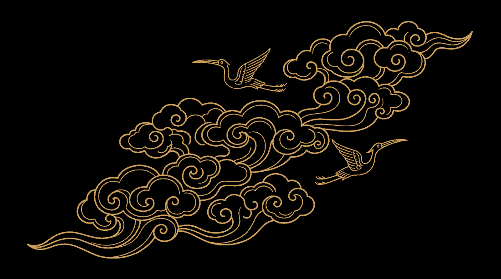
Choose a dish, or spin with the arrow keys
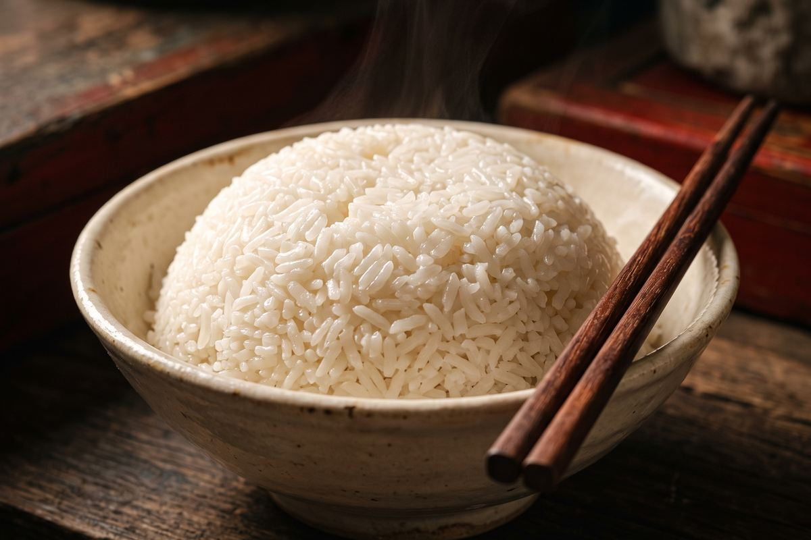
Dish 01 / 07 · the centre of gravity
Cơm Trắng
Steamed jasmine rice
In Vietnamese, ăn cơm — “to eat rice” — simply means to eat . Rice is not a side dish and not a starch course; it is the meal itself, and everything else on the tray is a way of getting through more of it. A pot is left warm on the stove for whoever comes home last.
- Where
- Everywhere, three times a day
- Tastes like
- Faintly sweet, faintly floral, deliberately plain
- Eaten with
- Everything. That is the point
- Grown in
- The Red River and Mekong deltas
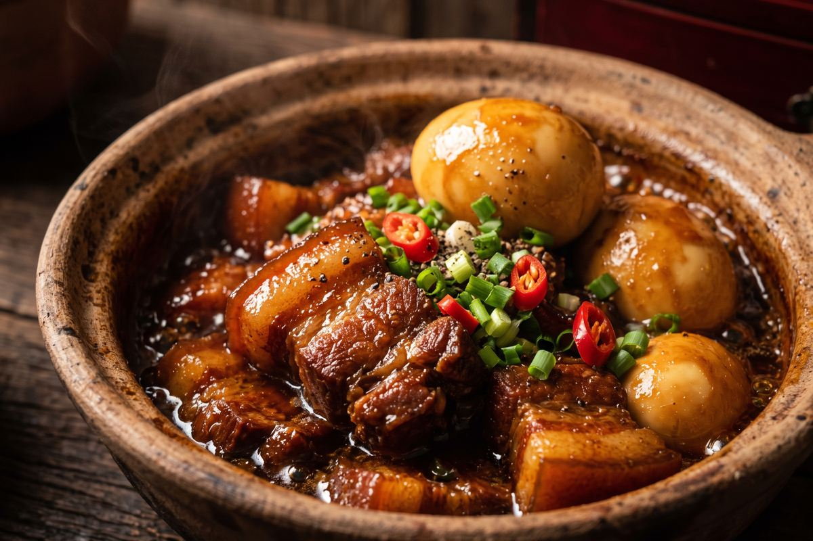
Dish 02 / 07 · the one that lasts a week
Thịt Kho Trứng
Caramel-braised pork belly & eggs
Pork belly and whole eggs simmered for hours in coconut water and burnt-sugar caramel until the fat gives way completely. Southern families cook a pot of it on the eve of Tết so that nobody has to work on New Year’s Day — it is one of the rare dishes that genuinely improves each time it is reheated.
- Where
- Miền Nam — the South, and every Tết
- Tastes like
- Deep, sweet-savoury, coconut-soft
- Takes
- Two and a half hours, mostly waiting
- Secret
- Fresh coconut water, never tinned milk
Dish 03 / 07 · the soup that is also a drink
Canh Chua Cá
Sour tamarind fish soup
The Mekong Delta throws its entire garden into one pot: tamarind, pineapple, tomato, okra, bean sprouts, rice-paddy herb, and whatever the river gave up that morning. A bowl sits at the edge of the tray all through the meal and is spooned over rice, sipped between bites, and used to wash down anything too salty.
- Where
- Đồng bằng sông Cửu Long — the Mekong Delta
- Tastes like
- Sour, sweet, hot and herbal at once
- Takes
- Twenty-five minutes
- Non-negotiable
- Rau om , torn in at the last second
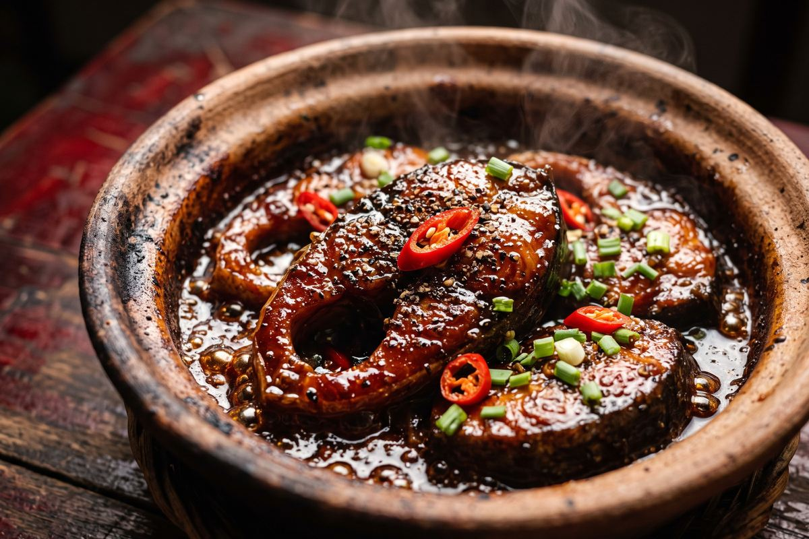
Dish 04 / 07 · one shade before bitter
Cá Kho Tộ
Clay-pot caramel fish
Catfish braised down in an unglazed clay pot until the sauce is thick enough to coat the back of a spoon. Everything depends on nước màu : sugar cooked to the colour of dark amber, pulled off the heat one shade before it turns bitter. Vietnamese cooks judge that moment by smell, never by a timer.
- Where
- Miền Nam — the South
- Tastes like
- Dark, salty-sweet, smoky at the edges
- Takes
- Forty minutes
- Vessel
- Clay. It holds heat the way nothing else does
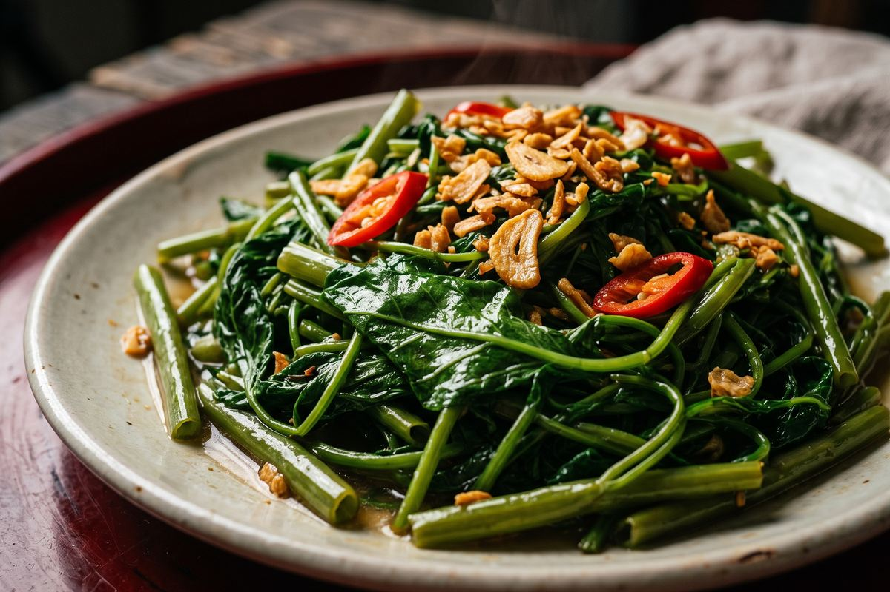
Dish 05 / 07 · thirty seconds, no longer
Rau Muống Xào Tỏi
Water spinach stir-fried with garlic
The most-eaten vegetable in the country and very nearly the cheapest. Screaming heat, a reckless fistful of garlic, thirty seconds in the wok. Any longer and the hollow stems collapse — the whole dish is a bet that you can move faster than the pan.
- Where
- Cả nước — the whole country
- Tastes like
- Green, snapping, unapologetically garlicky
- Takes
- Four minutes
- Leftover trick
- Boil the stems; drink the water as soup
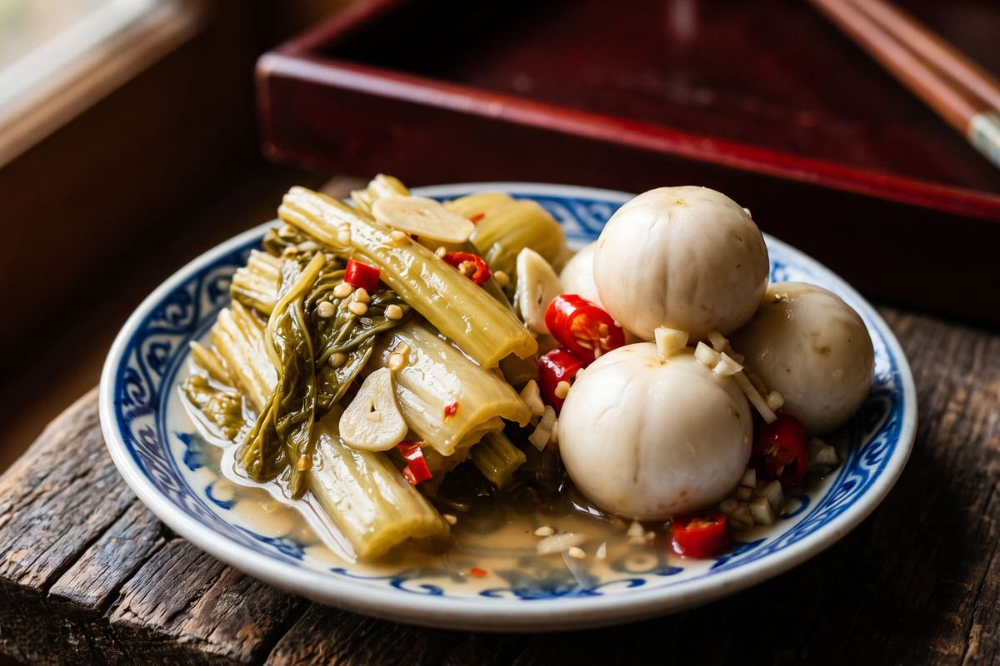
Dish 06 / 07 · the one that pushes back
Dưa Cải & Cà Pháo
Pickled mustard greens & brined eggplant
Every tray needs something sharp enough to argue with the rest of it. These live in a jar on the counter and arrive in a saucer barely wider than a palm, in deliberately small amounts, to reset the mouth between richer bites. Northern households will not sit down without them.
- Where
- Miền Bắc — the North
- Tastes like
- Sharp, salty, funky, bracing
- Takes
- Three days on the counter
- Portion
- Small. It is punctuation, not a sentence
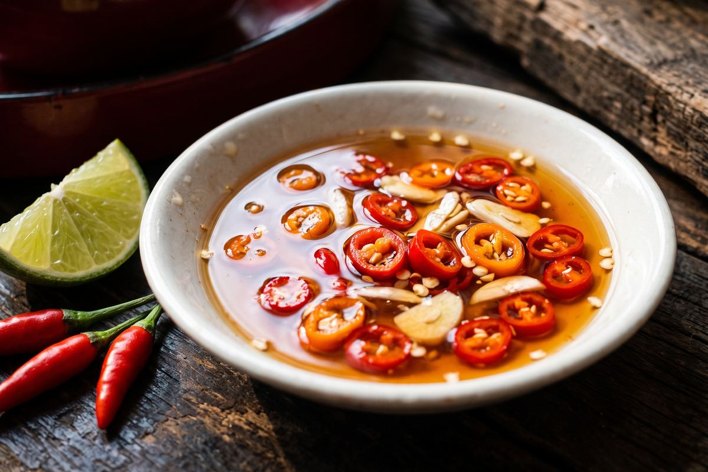
Dish 07 / 07 · the family signature
Nước Mắm Ớt
Chilli fish sauce, for dipping
Anchovies and sea salt, pressed in wooden barrels for a year and drawn off in grades like wine. The bottle is only the raw material: every household mixes its own dipping bowl with lime, sugar, garlic and chilli, and that ratio is the closest thing Vietnamese home cooking has to a handwriting.
- Where
- Phú Quốc & Phan Thiết
- Tastes like
- Salt, funk, sugar, lime, fire
- Takes
- Twelve months, then two minutes
- Placed
- Dead centre, within everyone’s reach
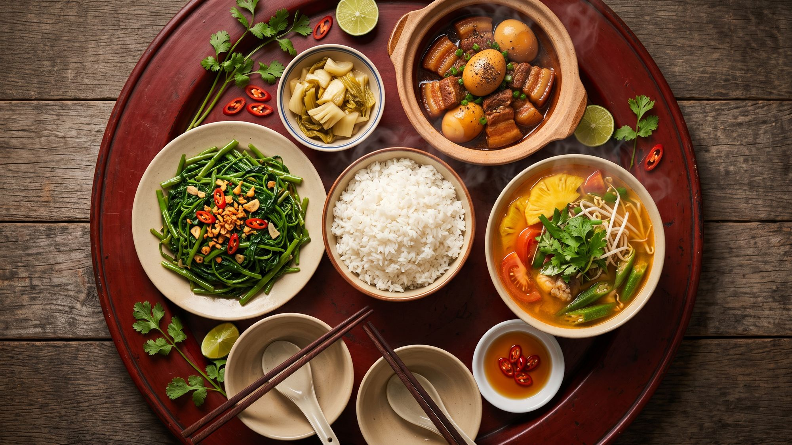
Mâm cơm miền Nam — a southern family tray, laid for four
Một mâm đầy đủ · A full tray
This is dinner.
All of it, at once.
No starter, no main, no dessert. Everything arrives together and stays on the table until it is gone — which means a Vietnamese meal is not a schedule, it is a place you sit down in. Seven dishes, one tray, and no wrong order to eat them in.
- 7 dishes
- 1 tray
- 40 min cooking
- 20 min eating
- 2 hours still sitting there
Nguồn gốc · Origins
Con Rồng
Cháu Tiên
“Children of the Dragon, Grandchildren of the Fairy”
Lạc Long Quân , a dragon lord of the sea, married Âu Cơ , a fairy of the mountains. She bore a sac of one hundred eggs, and from them one hundred sons. When the two finally parted, fifty followed their mother up into the highlands and fifty followed their father down to the coast.
That, Vietnamese children are told, is why we are the way we are: a people half water and half rock, who put the sea and the mountain on the same tray and eat them in the same mouthful. The eldest of those sons founded Văn Lang . His people cast bronze drums and flooded fields to grow rice.
Three thousand years later the drum is behind museum glass — and the rice is still on the table, still in the middle, still warm.
-
~1000 BCE · Văn Lang
Bronze casters at Đông Sơn pour the great drums while their neighbours flood the Red River delta to grow wet rice. Both technologies survive.
-
The face of the drum
A fourteen-rayed sun at dead centre, ringed by bands of Lạc herons in flight, long boats, and dancers in feathered headdresses. A drum, a calendar, and a map of an entire world — read from the middle outwards.
-
The tray
The same circle, in bamboo or red lacquer. Rice at the centre, dishes on the radius, nothing served in courses, every bowl within every arm’s reach. Geometry as table manners.
-
Tonight
Two main dishes, a soup, a plate of greens, a saucer of pickles, one bowl of fish sauce in the middle. Whoever gets home last still finds rice in the pot.
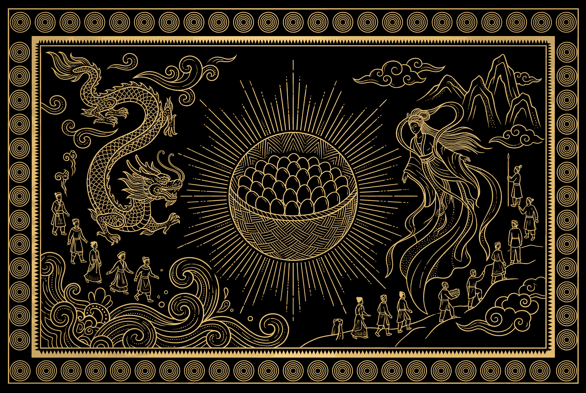
Công thức · One of the seven
Thịt Kho Trứng
Caramel-braised pork belly and eggs · serves the whole tray
Seven dishes go on the tray, but only one of them is the dish a Vietnamese mother teaches you first. If you learn a single thing to cook from this page, learn this one.
It is the dish a household makes when it wants to stop cooking for a while — forgiving, better reheated than fresh, and the smell of the caramel going into the pot is, for a great many of us, the actual smell of home. One pot on a Sunday carries a family through most of the week.
Ingredients
- 800 g pork belly, skin on, in 4 cm cubes
- 8 eggs, boiled 8 minutes and peeled
- 250 ml fresh coconut water
- 3 tbsp fish sauce
- 3 tbsp sugar — 2 for the caramel, 1 for the braise
- 4 cloves garlic, crushed flat
- 2 shallots, sliced thin
- 1 tsp black pepper, coarsely cracked
- 2 spring onions, cut in lengths
- a pinch of salt, for the marinade
Method
-
Marinate. Toss the pork with the fish sauce, one spoon of sugar, the shallots, garlic, pepper and a pinch of salt. Leave it thirty minutes at room temperature — longer in the fridge if you have the time.
-
Burn the sugar, carefully. In a heavy pot over medium heat, melt two spoons of sugar dry, without stirring. Swirl the pan. When it turns the colour of strong tea and smells faintly of toast, it is done. Ten seconds later it is ruined.
-
Sear. Tip in the pork and its marinade. It will hiss and seize. Turn the pieces until every side is lacquered dark and the fat has begun to render.
-
Add the coconut water and just enough plain water to come level with the meat. Bring it to a bare simmer and skim off the grey foam that rises in the first few minutes.
-
Braise low, uncovered or barely covered, for ninety minutes. Do not stir it — nudge it. The liquid should tremble, never roll.
-
Add the eggs in the last thirty minutes so they take on colour without going rubbery. Roll them over once or twice so they stain evenly.
-
Rest, then reheat. It is good now and noticeably better tomorrow. Serve with a great deal of white rice, something pickled, and something green.
On the caramel. Nước màu is the single skill this dish asks of you. Cook the sugar too little and the braise stays pale and sweet; too far and the whole pot turns bitter. Aim for the moment it stops smelling sweet and starts smelling toasted — and have the pork standing by, because there is no time to fetch it.
Nếp nhà · The way of the house
Six rules of the tray
A mâm cơm is a shared bowl, and shared bowls need etiquette. None of this is written down anywhere. All of it is taught before you can read.
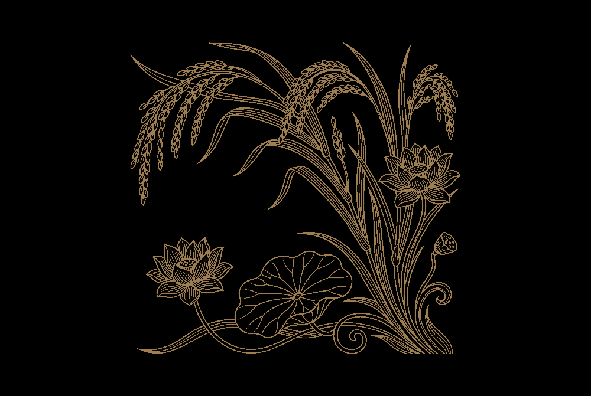
-
Mời cơm
“Invite, then eat.”The youngest at the table invites each elder to begin, by name and in order of age — “Con mời bà ăn cơm.” Nobody lifts chopsticks before that. It takes ten seconds and it sets the whole meal.
-
Ăn trông nồi, ngồi trông hướng
“Watch the pot as you eat; watch your seat as you sit.”Take what you need while noticing what is left. Never take the last piece of anything without offering it first — and never twice in a row from the same plate.
-
Gắp cho người khác
“Serve someone else.”The best piece in the dish does not go into your bowl. It goes into a grandparent’s, or a guest’s, placed there with your own chopsticks. Refusing it politely is part of the ritual too.
-
Cơm là chính
“Rice is the main thing.”Every dish is seasoned to be eaten with rice, not alone. Taste the braise by itself and it will seem far too salty. That is not a mistake — it is the recipe working as designed.
-
Không cắm đũa
“Never stand your chopsticks up.”Chopsticks pushed upright into a bowl of rice is an offering for the dead, set on an ancestral altar with incense. At a living table, lay them flat across the rim instead.
-
Ăn hết cơm
“Finish the rice.”Leave a grain and someone will tell you about the person who grew it. Nobody teaches this one as a rule. Everybody enforces it.
Lời chào · The greeting
Ăn cơm chưa?
“Have you eaten rice yet?”
It is how Vietnamese people say hello — to a neighbour, on the phone, to a child coming through the door. It is also how we say I was thinking about you , and are you all right , and come inside , and sit down , and there is still some in the pot .
There is no way to translate it that does not come out sounding like love.
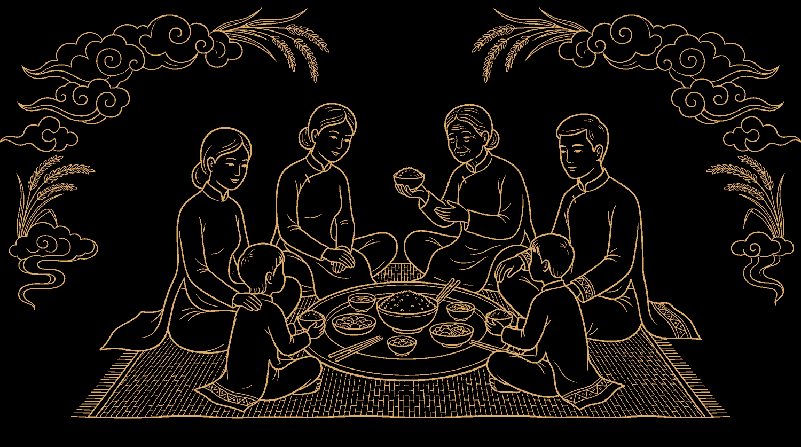